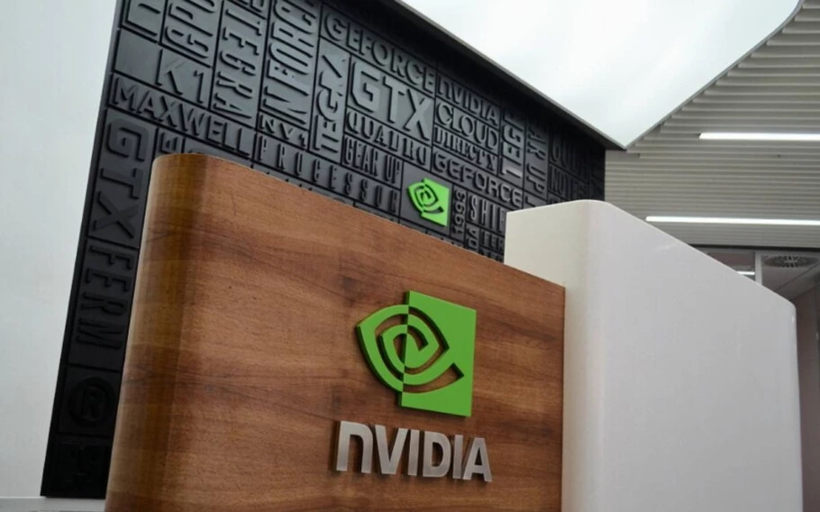

NVIDIA: Não somos mais uma empresa de gráficos e sim de IA
O CEO da NVIDIA, Jensen Huang, está mudando o rumo de sua corporação e enviou um e-mail para todos de sua equipe definindo que eles não são mais uma empresa com foco em gráficos, mas sim de inteligência artificial.